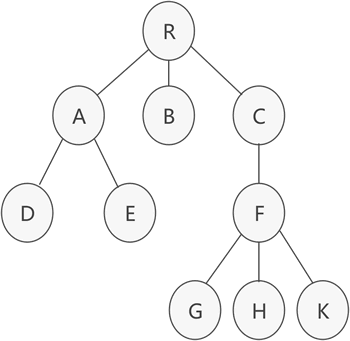
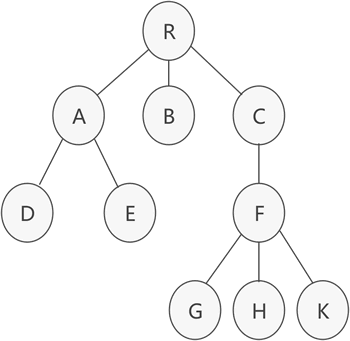

树的孩子兄弟表示法
前面讲解了存储普通树的双亲表示法和孩子表示法，本节来讲解最后一种常用方法——孩子兄弟表示法。

图 1 普通树示意图
树结构中，位于同一层的节点之间互为兄弟节点。例如，图 1 的普通树中，节点 A、B 和 C 互为兄弟节点，而节点 D、E 和 F 也互为兄弟节点。
孩子兄弟表示法，采用的是链式存储结构，其存储树的实现思想是：从树的根节点开始，依次用链表存储各个节点的孩子节点和兄弟节点。
因此，该链表中的节点应包含以下 3 部分内容（如图 2 所示）：
图 2 节点结构示意图
用 C 语言代码表示节点结构为：
以图 1 为例，使用孩子兄弟表示法进行存储的结果如图 3 所示:

图 3 孩子兄弟表示法示意图
由图 3 可以看到，节点 R 无兄弟节点，其孩子节点是 A；节点 A 的兄弟节点分别是 B 和 C，其孩子节点为 D，依次类推。
实现图 3 中的 C 语言实现代码也很简单，根据图中链表的结构即可轻松完成链表的创建和使用，因此不再给出具体代码。
接下来观察图 1 和图 3。图 1 为原普通树，图 3 是由图 1 经过孩子兄弟表示法转化而来的一棵树，确切地说，图 3 是一棵二叉树。因此可以得出这样一个结论，即通过孩子兄弟表示法，任意一棵普通树都可以相应转化为一棵二叉树，换句话说，任意一棵普通树都有唯一的一棵二叉树于其对应。
因此，孩子兄弟表示法可以作为将普通树转化为二叉树的最有效方法，通常又被称为"二叉树表示法"或"二叉链表表示法"。

图 1 普通树示意图
树结构中，位于同一层的节点之间互为兄弟节点。例如，图 1 的普通树中，节点 A、B 和 C 互为兄弟节点，而节点 D、E 和 F 也互为兄弟节点。
孩子兄弟表示法，采用的是链式存储结构，其存储树的实现思想是：从树的根节点开始，依次用链表存储各个节点的孩子节点和兄弟节点。
因此，该链表中的节点应包含以下 3 部分内容（如图 2 所示）：
- 节点的值；
- 指向孩子节点的指针；
- 指向兄弟节点的指针；
图 2 节点结构示意图
用 C 语言代码表示节点结构为：
#define ElemType char
typedef struct CSNode{
ElemType data;
struct CSNode * firstchild,*nextsibling;
}CSNode,*CSTree;
以图 1 为例，使用孩子兄弟表示法进行存储的结果如图 3 所示:
图 3 孩子兄弟表示法示意图
由图 3 可以看到，节点 R 无兄弟节点，其孩子节点是 A；节点 A 的兄弟节点分别是 B 和 C，其孩子节点为 D，依次类推。
实现图 3 中的 C 语言实现代码也很简单，根据图中链表的结构即可轻松完成链表的创建和使用，因此不再给出具体代码。
接下来观察图 1 和图 3。图 1 为原普通树，图 3 是由图 1 经过孩子兄弟表示法转化而来的一棵树，确切地说，图 3 是一棵二叉树。因此可以得出这样一个结论，即通过孩子兄弟表示法，任意一棵普通树都可以相应转化为一棵二叉树，换句话说，任意一棵普通树都有唯一的一棵二叉树于其对应。
因此，孩子兄弟表示法可以作为将普通树转化为二叉树的最有效方法，通常又被称为"二叉树表示法"或"二叉链表表示法"。
关注公众号「站长严长生」，在手机上阅读所有教程，随时随地都能学习。内含一款搜索神器，免费下载全网书籍和视频。

微信扫码关注公众号